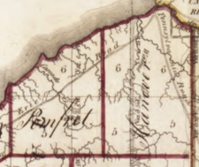

Chautauqua County, New York - c1818 |
|  Towns of Pomfret & Hanover Chautauqua County - c1818 |
Chautauqua County was created by partition of Genesee County on March 11, 1808. The partition was performed for political purposes, but the county were not properly organized, so it was controlled as part of Niagara County. On February 9, 1811, Chautauqua was completely organized, and so its separate government was launched. This established Chautauqua as a county of 1,100 square miles (2,848.99 square km) of land. Chautauqua was never altered.
The town of Pomfret was first settled around 1806 and formed in 1808 from the Town of Chautauqua, being the first partition of Chautauqua after the county was formed. Pomfret later lost substantial parts of its territory during the formation of five new towns of the county.
The Town of Hanover was formed in 1812 from part of the Town of Pomfret. The size of Hanover was reduced later to form the new Towns of Villenova (in 1823) and Sheridan (in 1827).
Sally Maria's family moved to Pomfret about 1822, and later moved to Hanover and purchased land located south of Silver Creek and west of Hanover Center from the Holland Land Company in 1828. Sally Maria's family moved away from Hanover in the spring of 1834.